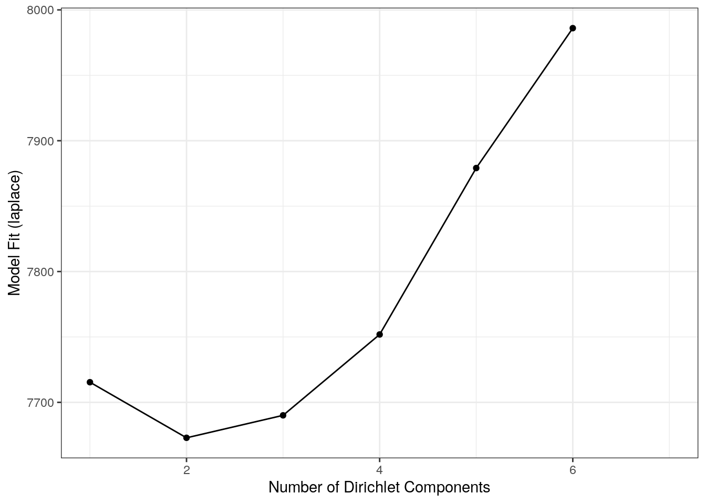
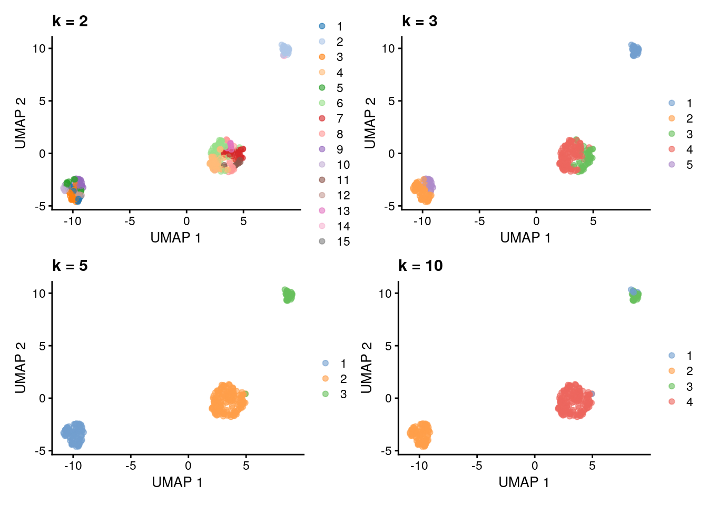
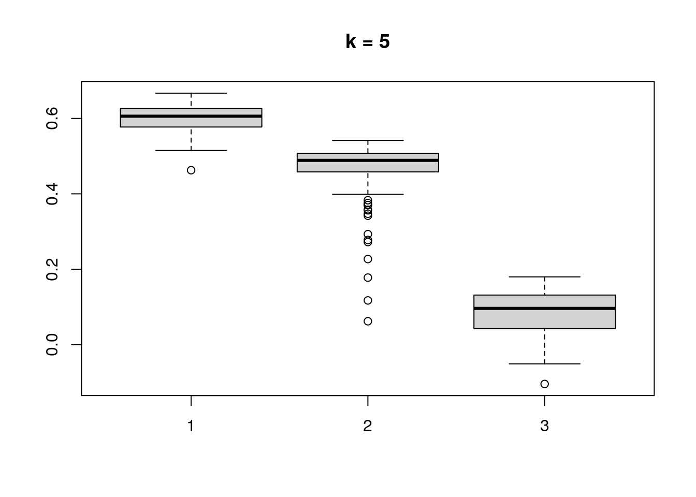
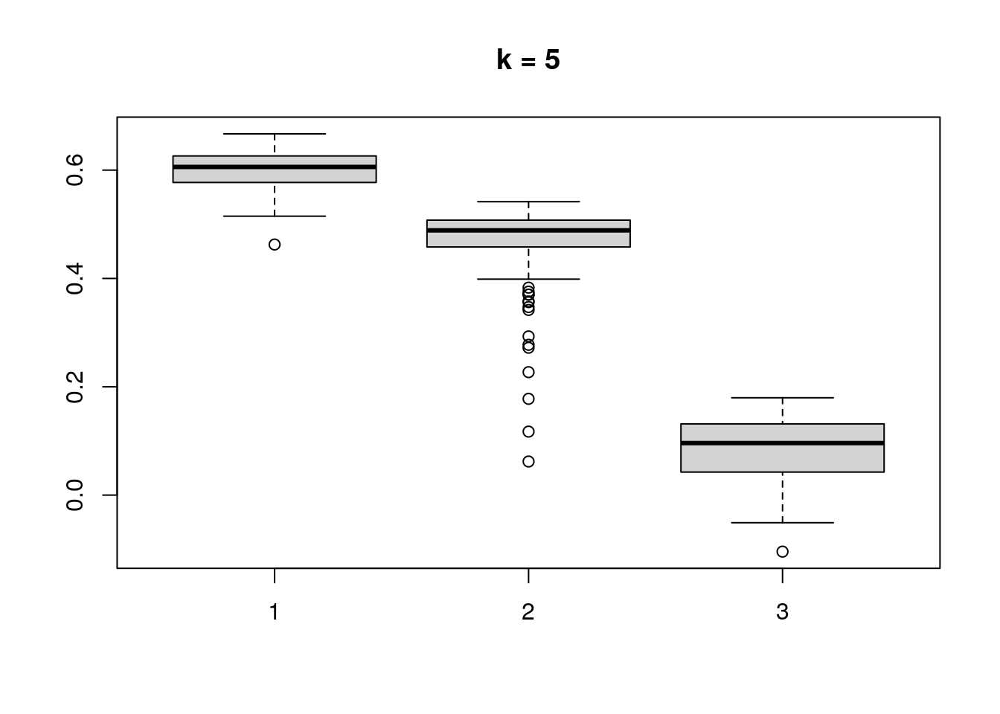

Chapter 11 Community typing
## Loading required package: ecodistlibrary(mia)
data("GlobalPatterns", package="mia")
tse <- GlobalPatterns11.1 Community typing
11.1.1 Dirichlet Multinomial Mixtures (DMM)
This section focus on DMM analysis.
One technique that allows to search for groups of samples that are similar to each other is the Dirichlet-Multinomial Mixture Model. In DMM, we first determine the number of clusters (k) that best fit the data (model evidence) using Laplace approximation. After fitting the model with k clusters, we obtain for each sample k probabilities that reflect the probability that a sample belongs to the given cluster.
Let’s cluster the data with DMM clustering.
# Runs model and calculates the most likely number of clusters from 1 to 7.
# Since this is a large dataset it takes long computational time.
# For this reason we use only a subset of the data; agglomerated by Phylum as a rank.
tse <- GlobalPatterns
tse <- agglomerateByRank(tse, rank = "Phylum", agglomerateTree=TRUE)
tse_dmn <- runDMN(tse, name = "DMN", k = 1:7)# It is stored in metadata
tse_dmn## class: TreeSummarizedExperiment
## dim: 67 26
## metadata(1): DMN
## assays(1): counts
## rownames(67): Phylum:Crenarchaeota Phylum:Euryarchaeota ...
## Phylum:Synergistetes Phylum:SR1
## rowData names(7): Kingdom Phylum ... Genus Species
## colnames(26): CL3 CC1 ... Even2 Even3
## colData names(7): X.SampleID Primer ... SampleType Description
## reducedDimNames(0):
## mainExpName: NULL
## altExpNames(0):
## rowLinks: a LinkDataFrame (67 rows)
## rowTree: 1 phylo tree(s) (66 leaves)
## colLinks: NULL
## colTree: NULLReturn information on metadata that the object contains.
names(metadata(tse_dmn))## [1] "DMN"This returns a list of DMN objects for a closer investigation.
getDMN(tse_dmn)## [[1]]
## class: DMN
## k: 1
## samples x taxa: 26 x 67
## Laplace: 7715 BIC: 7802 AIC: 7760
##
## [[2]]
## class: DMN
## k: 2
## samples x taxa: 26 x 67
## Laplace: 7673 BIC: 7927 AIC: 7842
##
## [[3]]
## class: DMN
## k: 3
## samples x taxa: 26 x 67
## Laplace: 7689 BIC: 8076 AIC: 7948
##
## [[4]]
## class: DMN
## k: 4
## samples x taxa: 26 x 67
## Laplace: 7792 BIC: 8357 AIC: 8187
##
## [[5]]
## class: DMN
## k: 5
## samples x taxa: 26 x 67
## Laplace: 7844 BIC: 8548 AIC: 8335
##
## [[6]]
## class: DMN
## k: 6
## samples x taxa: 26 x 67
## Laplace: 7926 BIC: 8796 AIC: 8540
##
## [[7]]
## class: DMN
## k: 7
## samples x taxa: 26 x 67
## Laplace: 8101 BIC: 9161 AIC: 8863Show Laplace approximation (model evidence) for each model of the k models.
library(miaViz)
plotDMNFit(tse_dmn, type = "laplace")
Return the model that has the best fit.
getBestDMNFit(tse_dmn, type = "laplace")## class: DMN
## k: 2
## samples x taxa: 26 x 67
## Laplace: 7673 BIC: 7927 AIC: 784211.1.2 PCoA for ASV-level data with Bray-Curtis; with DMM clusters shown with colors
Group samples and return DMNGroup object that contains a summary. Patient status is used for grouping.
dmn_group <- calculateDMNgroup(tse_dmn, variable = "SampleType", exprs_values = "counts",
k = 2, seed=.Machine$integer.max)
dmn_group## class: DMNGroup
## summary:
## k samples taxa NLE LogDet Laplace BIC AIC
## Feces 2 4 67 1078.3 -106.19 901.1 1171.9 1213
## Freshwater 2 2 67 889.6 -97.28 716.9 936.4 1025
## Freshwater (creek) 2 3 67 1600.3 860.08 1906.3 1674.5 1735
## Mock 2 3 67 1008.4 -55.37 856.6 1082.5 1143
## Ocean 2 3 67 1096.7 -56.21 944.6 1170.9 1232
## Sediment (estuary) 2 3 67 1195.5 18.63 1080.8 1269.7 1331
## Skin 2 3 67 992.6 -84.81 826.2 1066.8 1128
## Soil 2 3 67 1380.3 11.21 1261.8 1454.5 1515
## Tongue 2 2 67 783.0 -107.74 605.1 829.8 918Mixture weights (rough measure of the cluster size).
DirichletMultinomial::mixturewt(getBestDMNFit(tse_dmn))## pi theta
## 1 0.5385 20.60
## 2 0.4615 15.28Samples-cluster assignment probabilities / how probable it is that sample belongs to each cluster
head(DirichletMultinomial::mixture(getBestDMNFit(tse_dmn)))## [,1] [,2]
## CL3 1.000e+00 5.058e-17
## CC1 1.000e+00 3.868e-22
## SV1 1.000e+00 2.033e-12
## M31Fcsw 7.334e-26 1.000e+00
## M11Fcsw 1.064e-16 1.000e+00
## M31Plmr 9.988e-14 1.000e+00Contribution of each taxa to each component
head(DirichletMultinomial::fitted(getBestDMNFit(tse_dmn)))## [,1] [,2]
## Phylum:Crenarchaeota 0.3043 0.1354646
## Phylum:Euryarchaeota 0.2314 0.1468589
## Phylum:Actinobacteria 1.2105 1.0601236
## Phylum:Spirochaetes 0.2141 0.1318401
## Phylum:MVP-15 0.0299 0.0007676
## Phylum:Proteobacteria 6.8416 1.8153906Get the assignment probabilities
prob <- DirichletMultinomial::mixture(getBestDMNFit(tse_dmn))
# Add column names
colnames(prob) <- c("comp1", "comp2")
# For each row, finds column that has the highest value. Then extract the column
# names of highest values.
vec <- colnames(prob)[max.col(prob,ties.method = "first")]Computing the euclidean PCoA and storing it as a data frame
# Does clr transformation. Pseudocount is added, because data contains zeros.
tse <- transformCounts(tse, method = "clr", pseudocount = 1)
# Gets clr table
clr_assay <- assays(tse)$clr
# Transposes it to get taxa to columns
clr_assay <- t(clr_assay)
# Calculates Euclidean distances between samples. Because taxa is in columns,
# it is used to compare different samples.
euclidean_dist <- vegan::vegdist(clr_assay, method = "euclidean")
# Does principal coordinate analysis
euclidean_pcoa <- ecodist::pco(euclidean_dist)
# Creates a data frame from principal coordinates
euclidean_pcoa_df <- data.frame(pcoa1 = euclidean_pcoa$vectors[,1],
pcoa2 = euclidean_pcoa$vectors[,2])# Creates a data frame that contains principal coordinates and DMM information
euclidean_dmm_pcoa_df <- cbind(euclidean_pcoa_df,
dmm_component = vec)
# Creates a plot
euclidean_dmm_plot <- ggplot(data = euclidean_dmm_pcoa_df,
aes(x=pcoa1, y=pcoa2,
color = dmm_component)) +
geom_point() +
labs(x = "Coordinate 1",
y = "Coordinate 2",
title = "PCoA with Aitchison distances") +
theme(title = element_text(size = 12)) # makes titles smaller
euclidean_dmm_plot
11.2 Community Detection
Another approach for discovering communities within the samples of the data, is to run community detection algorithms after building a graph. The following demonstration builds a graph based on the k nearest-neighbors and performs the community detection on the fly.
bluster (Lun 2021) package offers several clustering methods,
among which graph-based are present, enabling the community detection
task.
Installing package:
if(!require(bluster)){
BiocManager::install("bluster")
}The algorithm used is “short random walks” (Pons and Latapy 2006). Graph is
constructed using different k values (the number of nearest neighbors
to consider during graph construction) using the robust centered log
ratio (rclr) assay data. Then plotting the communities using UMAP
(McInnes, Healy, and Melville 2018) ordination as a visual exploration aid. In the
following demonstration we use the enterotype dataset from the
(Ernst, Shetty, and Lahti 2020) package.
library(bluster)
library(patchwork) # For arranging several plots as a grid
library(scater)
data("enterotype", package="mia")
tse <- enterotype
tse <- transformCounts(tse, method = "rclr")
# Performing and storing UMAP
tse <- runUMAP(tse, name="UMAP", exprs_values="rclr")
k <- c(2,3,5,10)
ClustAndPlot <- function(x) {
# Creating the graph and running the short random walks algorithm
graph_clusters <- clusterRows(t(assays(tse)$rclr), NNGraphParam(k=x))
# Results of the clustering as a color for each sample
plotUMAP(tse, colour_by = I(graph_clusters)) +
labs(title = paste0("k = ", x))
}
# Applying the function for different k values
plots <- lapply(k,ClustAndPlot)
# Displaying plots in a grid
(plots[[1]] + plots[[2]]) / (plots[[3]] + plots[[4]])
Similarly, the bluster (Lun 2021) package offers clustering
diagnostics that can be used for judging the clustering quality (see
Assorted clustering
diagnostics).
In the following, Silhouette width as a diagnostic tool is computed
and results are visualized for each case presented earlier. For more
about Silhouettes read (Rousseeuw 1987).
ClustDiagPlot <- function(x) {
# Getting the clustering results
graph_clusters <- clusterRows(t(assays(tse)$rclr), NNGraphParam(k=x))
# Computing the diagnostic info
sil <- approxSilhouette(t(assays(tse)$rclr), graph_clusters)
# Plotting as a boxlpot to observe cluster separation
boxplot(split(sil$width, graph_clusters), main=paste0("k = ", x))
}
# Applying the function for different k values
res <- lapply(k,ClustDiagPlot)
 

11.3 Additional Community Typing
For more community typing techniques applied to the ‘SprockettTHData’ data set, see the attached .Rmd file.
Link: